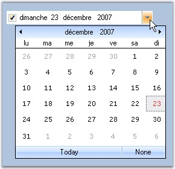

DateTimePickerAdv is an advanced DateTimePicker control. It provides an easy way to implement a culture-based DateTimePicker in an application. It has support for a string to be displayed when the user doesn't want a specific date selected. It also supports dropping down a custom window and interacts with its controls if a user chooses to implement the IDateTimePickerAdvCalendar interface. The control comes variety of visual style including Office2007 styles.

Figure 248: DateTimePickerAdv with Globalization Support
See Also
 Features
Features